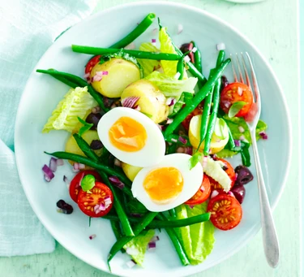
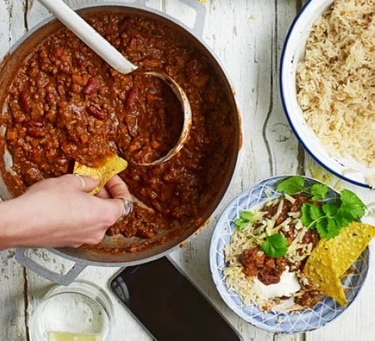
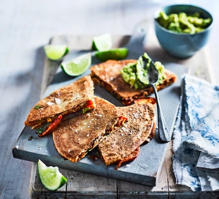
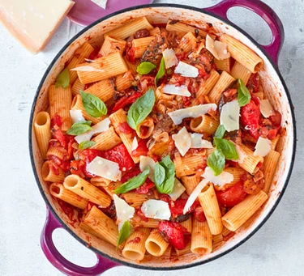
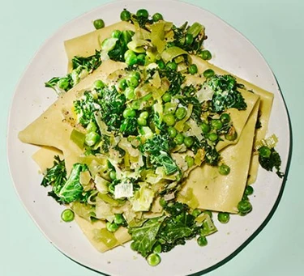

Try a vibrant and substantial salad for a side dish or mains. Use seasonal veg in allotment salads, summer sharing platters and comforting winter bowls.

Fill your dinner plate with veg and enjoy one of these filling meat-free suppers. Tuck into veggie chillis, curries, pasta dishes and more.

Simple, vibrant veggie lunch recipes that will keep you full until dinner. Tuck into soups, salads, wraps and more delicious veg-packed dishes.

Rustle up a sumptuous veggie meal in half an hour or less. We've got pasta, curries, stir-fries and a whole host of other speedy vegetarian and vegan dishes.

From creamy cacio e pepe and lentil bolognese to veggie lasagne, our plant-based pasta dishes are sure to satisfy vegetarians and meat-eaters alike.